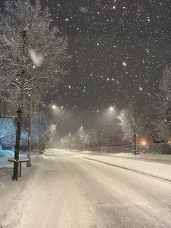

Зима
Мое любимое время года - зима.
Я люблю зиму, потомучто зимой мое день рождение и зимой очень весело гулять с друзьями, также присутствует классная атмосфера

Мое любимое время года - зима.
Я люблю зиму, потомучто зимой мое день рождение и зимой очень весело гулять с друзьями, также присутствует классная атмосфера
